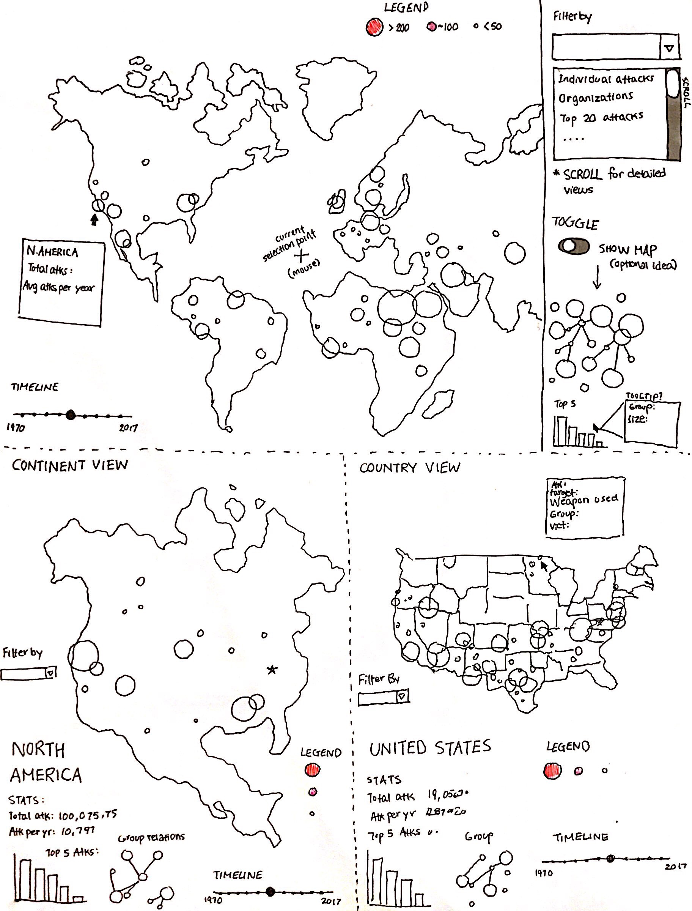
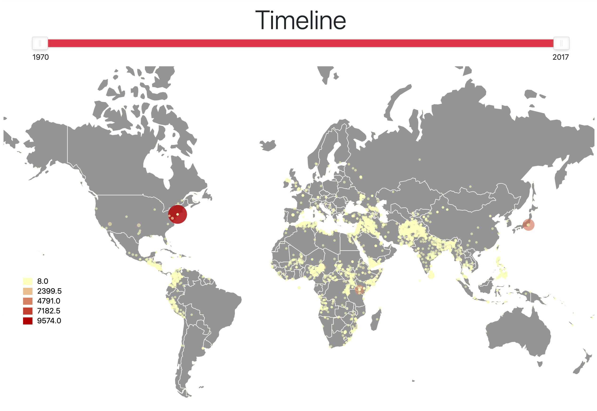

Overview and Motivation
Our visualization aims to help illuminate how terrorist attacks changed over the years, in addition to showing any trends that may appear. This is especially relevant considering different current events all over the world brought to light by modern social media and digital outlets. We recognize that this is a serious and sensitive topic that deserves to be analyzed, and wish to display the data in a neutral unbiased light without sensationalist purposes.
Source: https://www.cnn.com/2019/03/15/asia/new-zealand-christchurch-attack-what-we-know-intl/index.html
Related Work
There are a number of different sources that provided inspiration to this project. The visualizations themselves were heavily inspired by some previous studio work involving mercator maps, as well as a previous assignment that dealt with showing political leanings across the different states of the USA. In addition, a visualization linked from from database used influenced several decisions made: https://www.start.umd.edu/gtd/.
Questions
Some questions we are trying to answer are what are some of the trends involving global terrorism attacks? Have the frequency of such attacks increased over the last couple of years? How have certain factors influence such attacks? These questions have evolved over the project as we started to hone into what available data was available to us, as well as how much of the data we could process reasonably over the timespan of this project. For example, we [TO BE COMPLETED]
Data
We retrieved our data from https://www.kaggle.com/START-UMD/gtd, then proceeded to process it both through Javascript and by manual cleanup in order to mold it into a usable format. We also utilize some geo json for dividing up the maps by country.
Exploratory Data Analysis
Design Evolution
Sketches and Screenshots
Sketches: World Map with supplementary graphs


Final Design
Milestone 1: Prototype
